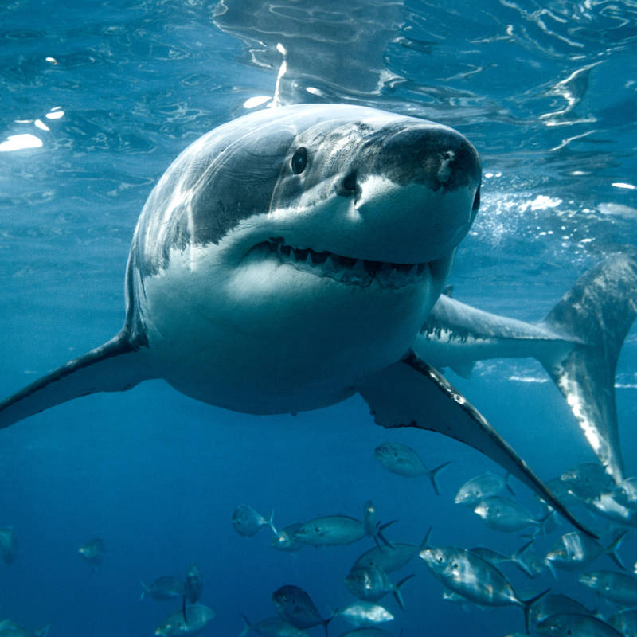
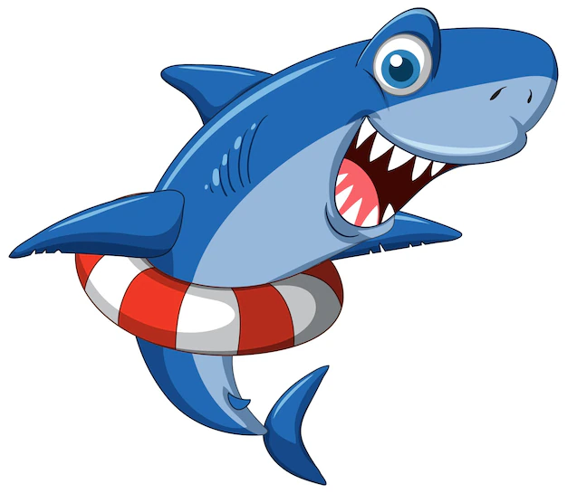

Los tiburones, también llamados escualos, pertenecen al orden de los selacimorfos y llegaron a convivir con los dinosaurios. Una afirmación así no puede hacerse con apenas ningún animal de los que hoy en día conocemos. Su presencia en nuestro planeta está documentada desde hace más de 450 millones de años, si bien es cierto que aquellos no son los mismos que rondan los océanos en la actualidad sino una versión evolucionada.
Los tiburones, también llamados escualos, pertenecen al orden de los selacimorfos y llegaron a convivir con los dinosaurios. Una afirmación así no puede hacerse con apenas ningún animal de los que hoy en día conocemos. Su presencia en nuestro planeta está documentada desde hace más de 450 millones de años, si bien es cierto que aquellos no son los mismos que rondan los océanos en la actualidad sino una versión evolucionada.
Los tiburones pertenecen a la clase de los peces cartilaginosos, junto con las rayas y las quimeras. Mientras que el esqueleto de todos los demás peces está hecho de hueso, el esqueleto de los tiburones está hecho de cartílago.